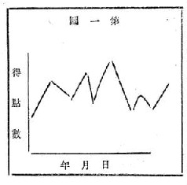

数理を加味せる牌技の一端
そこで甚だ概念的な孝へ方ではあるが、或人の相当長期に捗る成績を持出して論じて見よう。いま年月日を横軸にし、成績点数を縦軸にしてグラフを作る時、連山を想起せしむが如き高低ある線が現れるのが一般である。

そして横軸に平行して一つの基準線を設け、基準線と成績線との問の面積の平均縦軸を求めると、之がその人の当該期間に於ける平均の成績となるわけだ。一般には基準線を零点の所へ引くので基準線より上を正、下を負として取り扱って居る。
吾々が今日『レコード』を残して行くのは此平均値を求むる事が主目的なのだ。これは一定期間に於ける甲、乙、丙各々の平均値を比較して優劣を定めようと言ふ精神に出発して居ると考へられる。勿論現在之より通常なる方法は一寸見受けぬが、此の方法とても絶封的に正しいとは言えない。それは麻雀と言ふゲームが、多くの條件によって支配されて居るからである。
しかし此のグラフに依つて、次の如き事が言ひ得るように思はれる。即ち長期間のグラフを求め其の極大値及極小値を同数宛摘出してその平均差を求めると、其の値は各人に就いて殆ど同一である事である。相場では之を「幅」とか言ふさうだから私も之を「幅」と呼ぶ事にする。即ち長期間（実際には一年間位で充分のようだ）の平均幅は、申、乙、丙共に殆ど同一なりと言ふ事がわかる。
却詮、甲、乙、丙及丁の四人が同値の運を持ち合せて同条件で一年間対局したとしたなら、運は同値であるから毎局相殺される。すると現はれた成績は各々四人の技と見なし得るわるけだから、若し四人の扱ひが同一の割合で進む時には平均線自身が成績線になるわけである。しかし実際は成績線が直線として存在する事は先づ無いだらう。
即ち平均線の上下を動いて幅を生する所以である。然るに此幅が相当の長期間にわたると平均値に於いて殆ど同一となるのは、運気が長い間には其の総和に於てかなり接近する事を如実に物語るものである。
一寸断つて置くが最近合理的採点法と言ふ問題が一部で喧しく論議されて居るようだが未だ完成されたわけでもない。また四圏戦に於ての不合理を打破しょうと言ふ運動だから、これは別に意見として述べる事とする。
さて斯様に考へて来ると闘牌の名手は其の保有する幅に於ては下手の者と相違はないが唯平均線の位置が高位に存在するわけである。其の理想としては幅の上下共に正の圏内に有る事を必要とするけれども、之は先づ至難と見なさなければならない。すれば度少く負けて、度多く勝つか、数小さく負けて、数大きく勝つかの二方法しかない。
実際は此の二方法の内、前者を少量と後者を多量に加味した方法の保持者が多いようだ。例へば500回競技しても、内、勝300回、負200回、差引勝ち100回と言ふ風になつて居る。
そして其の内の或る期間は、例へば勝ち100回に対して負100回となつて居る事が往々有るが、それでも得点数に於ては勝ちになつて居る事が頗る多い。
現今のルールでは此れ以上上手が上手としての価値を歴然として示して呉れる方法はないのでは無いかと思つて居る。それだからこそ、下手が上手の間に入って勝つ事がある。この一事を以つて理論的研究に耳を籍さない人が有るなら、此の人は楯の反面、否、拾分之一位しか知らないと言はれても止むを得まい。
然し乍ら先覚者を以て任する各位は、麻雀は上手でも勝つとは限らぬように出来て居ると言って、其のまま引き下つて居るような者では寒心の至りだと思ふ。宜し〈大衆の赴かんとする方向を察知すべきであつて、最近斯技の合理的進歩向上を計らんとする機運の萌せる時にあたっては益々其の感を深うする。
他の競技でも同様だらうが、ルールと策戦なるものは互に並行せるものであつて、作戦はルールの陥穴を縫ふて行はるべく、其処に不合理を認めたる時にルールは改訂すべきであると言ふ意見を私は持つて居る。
此処にルールの鉄路を縫ふて策戦を行ふと言ったが、之は非スポーツ的な意義に解して賞ひたくない。例へば現在混一色も平和も共に一翻と言ふ事になつて居るが、若し仮りに平和の方が混一色よりも遙かに有利なる事が理論的研究に依って判明したとする。今之を策戦として使用する人があつたとしたら、其の人の技は確に一歩向上したと見なさなければならないだらう。そしてそれが一般的智識となり始めたら、ルールの改変が必然大衆の声として湧いて来るわけだ。
この操作を繰り返へしてルールも完成の域に達すべく、研究も充分なる発達を遂げるのである。然し斯る時代はまだ将来の事であつて、現今としては、各自が勝手に研究した事柄を広く江湖に発表して其の成果を批判せしめる。
その傍ら、稍々もすれば倦怠状態に陥らんとしつつある多数の理解少き『フアン』に斯る新生面ある事を知らしめて、日本の麻雀界を、より一層、長日月に渉つて隆盛ならしむべく努力するのが、先覚者としての刻下の急務ではなからうか。
|